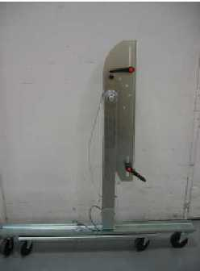
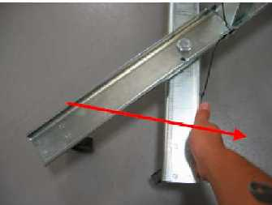
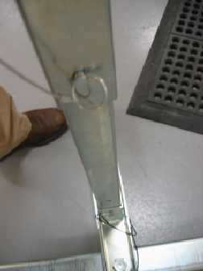
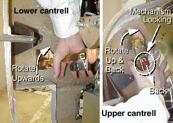
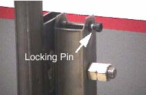

Operating Documentation
Direction 5193574-800, Rev# 22
LightSpeed 7.X Service Methods
Module Version 3.0, Version Date 2/10/15
Operating Documentation |
| Required Persons | Preliminary Reqs | Procedure | Finalization |
|---|---|---|---|
| 1 | Not Applicable | 10 mins | Not Applicable |
This procedure explains how to remove and re-install the CT Gantry front cover.
| Last Revised: | January 28, 2015 |
| ||||
| Shock Hazard | ||||
| Voltage Present | ||||
| No service on left side while energized. |
| ||||
| Potential for front and rear cover damage. Front and rear cover removal and installation can be safely accomplished by (1) person using the dollies provided with the system. Failure to use these dollies will significantly increase the likelihood of damage to the covers. Do not lean covers against walls. | ||||
| NOTE: | Before beginning this procedure, please read the safety information in Equipment Service-Gantry. |
| Condition | Reference | Effectivity |
|---|---|---|
Only trained service personnel should service the GE CT scanner. | - | - |
The Gantry side, top and scan window procedures must have already been used. | - | - |
Table should be at it's lowest position to allow front cover to be moved away from gantry. | - | - |
| ||||
| EQUIPMENT TIP HAZARD | ||||
| Do not use dollies on uneven surfaces such as steps or elevator thresholds. The dollies are designed to be used on flat level floors within the scanning suite only. Misuse can result in personal injury or damage to covers or other facility items. | ||||
| ONLY USE DOLLIES ON FLAT SURFACES. |
Bring Dolly out of storage into open space. See Illustration 1.
Illustration 1: Front Cover Dolly in Storage Mode

Pull feet out to form cross. See Illustration 2.
| NOTE: | One side of the lower foot is shorter than the other to accommodate the wall in small rooms. |
Illustration 2: Front Cover Dolly Base Assembly

Place the pin to secure the feet into position. See Illustration 3.
Illustration 3: Place Pin to Secure Feet

Remove the pin from the cover bracket tube. See Illustration 4.
Illustration 4: Remove Pin from Tube

| ||||
| EQUIPMENT TIP HAZARD | ||||
| COVER DOLLIES MAY TIP OVER IF NOT CONFIGURED PROPERLY. | ||||
| ENSURE that all SCREWS ARE TIGHTENED SECURELY AND THE LEGS ARE secured TIGHTLY BETWEEN THE BASE TOP AND BOTTOM PLATES. FAILURE TO DO SO WILL RESULT IN INSTABILITY DURING FRONT COVER HANDLING. |
Raise the bracket to the proper height and secure it by inserting the pin into the upper hole on the support tube. See Illustration 5.
Illustration 5: Secure Bracket with Pin

Position dolly so the pivot bolt for the feet is on the table side (front side) of the gantry. See Illustration 6.
Illustration 6: Dolly Feet Configuration

| NOTE: | The short part of the feet faces outwards toward the wall. The L and R stickers (If existing)(see Illustration 7) refer to the sides as you face the gantry from the front. |
Illustration 7: Direction Stickers

Once the studs are secured on the cover, tighten the ratcheting handle (see Illustration 8).The handle can be pulled out and turned to clear the support tube.
Illustration 8: Ratcheting Handle Button

Turn the handle to HAND TIGHT.
Position the table at its lowest position if not already done.
| NOTE: | With the table at its lowest position, if the distance between the end of the table and the wall/obstruction is less than 18 inches (457 mm), the table must be partially raised in order to move the front cover to a location that is free and clear from the table. |
For a raised table cover removal, perform the following steps:
Position the table height to 285 mm.
Remove the front cover and position it over the table as described in this procedure.
Using the service switches on the GTCB (see Global Table Theory) move the table in towards the gantry to its hard stop.
Move the cover to a safe location.
For re-installation, position the front cover over the table, and use the service switches on the GTCB to move the table out and down. Re-install the front cover as normal.
Verify that the three (3) power switches have been turned OFF(see Illustration 9).
Illustration 9: Service Switch Panel

Detach front cover J3 and J2 and front cover BKHD J1 cables.
Remove front cover.
Disengage upper and lower cantrell brackets on the right side (Service Switch side) of the front cover.
Using steady but firm pressure, lift each of the lower cantrell brackets from their associated retainers. See Illustration 10.
Illustration 10: Releasing Cover Brackets

Disengage the locking mechanism on the upper cantrell brackets by using your thumb to slide the trigger (red lever) back. This will release the locking mechanism and allow the cantrell to be rotated upwards with steady and firm pressure.
Disengage the upper cantrell from the left side using the same procedure as above. The lower cantrell bracket on the left will be disengaged after the cover is released from the gantry mounts.
Disengage the rubber retaining straps on both sides. See Illustration 11. You may find it helpful to lift “up” on the cover to align the stud while attaching the rubber retaining straps.
Illustration 11: Rubber Retaining Straps and Cover Locking Mechanism

Lift and rotate cover locking arm to unlocked position.
Pull front cover forward on left side while releasing the lower cantrell (latch) bracket on the front of the Gantry heater box.
Illustration 12: Lower left cover latch (cantrell)

Rotate front cover away from gantry.
Move front cover away from gantry, leaving space (about 5 inches) between cover and gantry.
Pull the locking pin and rotate front cover away from gantry. Place locking pin in one of the side dolly perforations. See Illustration 13.
Illustration 13: Releasing Front Cover Dolly Hinge

Continue cover removal per Illustration 14.
Illustration 14: Front Cover Removal Sequence

Rotate the cover horizontally and move it back and over the table to a safe location. Once in a safe location, you may rotate the cover full vertically upside down or right side up.
Use this section if you need to use the gantry controls with the covers removed and the front cover can not be positioned close enough to the gantry to reconnect the cables with the cover sitting to the right of the gantry. Connecting the cables to the cover positioned next to the gantry is the preferred method.
Remove the gantry display from the front cover and place it into its service position.
The gantry display is held in place with (5) thumb screws. Use a flat-blade screwdriver to remove the Display. See Illustration 15.
Illustration 15: Gantry Display Removal

Place the Display in the bracket on the right side of the gantry. See Illustration 16.
Illustration 16: Gantry Display Service Mounting Location

Disconnect the cabling at the right rear gantry cover. Only (1) cable will connect to the Gantry Display. Connect the cable taken from the rear cover to the display.
Remove one (1) of the cover’s control assemblies, and place it into its service position.
Press on each ball stud until the panel is released. See Illustration 17. Keep one hand on the control panel at all times to prevent it from dropping to the floor.
Illustration 17: Gantry Control Panel Removal

Using a cable tie, attach the control panel on the side of the gantry along the cable bundle as shown in Illustration 18.
Illustration 18: Control Panel Service Position

Connect cable J1 to the terminator located on the cantrell arm or on the gantry frame below the cantrell.
| NOTE: | There are 3 cables, each of which is unique. The ribbon cable is not used in the Service configuration. The other 2 cables will only fit in the terminator or the control panel, not both. |
Illustration 19: Terminator locations

Remove the gantry display and control assembly from their service positions and reattach them to the gantry cover if previously removed.
Disconnect cables from Display and Gantry Control Panels.
Install Gantry Display in front cover. Secure the 5 thumbscrews. With a flat-blade screwdriver, gently tighten past finger-tight.
Install the gantry control panel, making sure the ball studs are secure within the receivers.
Reattach cables.
| ||||
| Potential for front cover damage. When you rotate the gantry back to its vertical position, make sure not to scratch the front cover with the edge of the table cradle. | ||||
Rotate front cover back to its vertical position.
Attach the front cover.
Align the studs on both sides of the front cover with each associated receiver. Receiver is located on the gantry frame.
| NOTE: | Be careful with the latch on the front of the gantry blower at the lower left side while positioning cover. Make sure the cover pin goes over top of the latch while positioning the cover to the gantry mount bracket. See Illustration 21. |
Illustration 20: Cover Stud and Mounting Bracket Receiver

Illustration 21: Lower left cover latch (cantrell)
Insert the stud on one side into its associated receiver and attach the rubber retaining straps. Then insert the stud on the other side into its associated receiver and attach its rubber retaining straps.
You may find it helpful to lift "up" on the cover to align the stud while attaching the rubber retaining straps.
Reattach upper cantrell brackets on both sides and lower cantrell on right side.
Remove upper Cantrell brackets from service position and rotate them into position over their associated retaining pins.
Press down firmly on the bracket and snap it into place. The locking mechanism on each upper bracket should lock the bracket securely into place. Do this on both sides. See Illustration 22.
Illustration 22: Locking the cover brackets into place.

Remove right side lower cantrell bracket from service position and rotate into position over their associated retaining pins. Press down firmly on the bracket and snap it into place. See Illustration 22.
Remove dolly, disassemble and store safely away for later use.
Reattach cables to cover.
Continue with other cover installation procedures as necessary. When AC power is restored to the system, prior to enabling axial drive or HVDC, remember to rotate the gantry by hand to ensure there is no interference between covers and rotating components.
Remember when power is restored, Observe Gantry Display and Gantry Control panels during power on. Verify Power On Self Test (POST) completes normally and all cover indicators were illuminated during the POST. Verify that all Gantry control panels are functional with no ERR indicators. Also verify that the Gantry to Operator intercom is functional.
Verify all covers especially side covers are properly secured.
Ensure there is no interference during all tilt range.